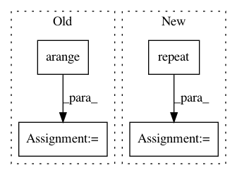

9def69a805132ff7549744b5b30a2fa7531fa405,tmtoolkit/preprocess/_tmpreproc.py,TMPreproc,tokens_dataframe,#TMPreproc#,128
Before Change
for dl, df in tokens.items():
df = df.copy()
df["doc"] = dl
df["position"] = np.arange(len(df))
dfs.append(df)
if dfs:
res = pd.concat(dfs, ignore_index=True)
After Change
dfs = []
for dl, df in tokens.items():
n = df.shape[0]
meta_df = dt.Frame({
"doc": np.repeat(dl, n),
"position": np.arange(n)
})
dfs.append(dt.cbind(meta_df, df))
if dfs:
In pattern: SUPERPATTERN
Frequency: 3
Non-data size: 4
Instances
Project Name: WZBSocialScienceCenter/tmtoolkit
Commit Name: 9def69a805132ff7549744b5b30a2fa7531fa405
Time: 2019-06-12
Author: markus.konrad@wzb.eu
File Name: tmtoolkit/preprocess/_tmpreproc.py
Class Name: TMPreproc
Method Name: tokens_dataframe
Project Name: rusty1s/pytorch_geometric
Commit Name: 6fac413c0c51c3be54de3a68801b43446ab98dee
Time: 2017-10-08
Author: matthias.fey@tu-dortmund.de
File Name: graph/grid.py
Class Name:
Method Name: grid_points
Project Name: cornellius-gp/gpytorch
Commit Name: 979b8c9efa551e8c948a4aca145367a2d87ac8d6
Time: 2019-02-26
Author: balandat@fb.com
File Name: test/distributions/test_multitask_multivariate_normal.py
Class Name: TestMultiTaskMultivariateNormal
Method Name: test_multivariate_normal_batch_correlated_sampels